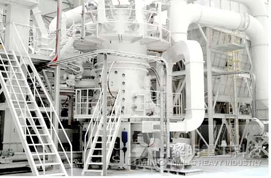
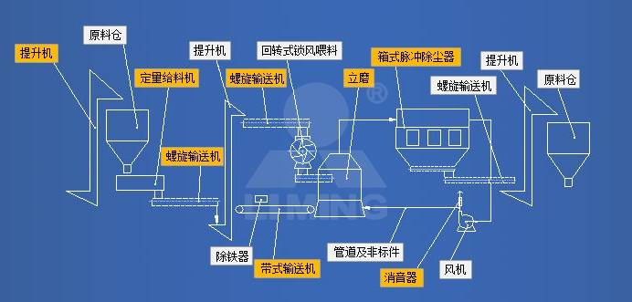

历经30多年四代磨机研发制造经验打磨，引进德国超细立磨磨辊技术，LUM超细立式磨突破超细粉加工产能瓶颈，既保留了LM立式磨运行安全、产能高效、使用成本低等诸多优点，又在超细粉碎加工领域拥有独树一帜的优势：能耗、处理效率、使用寿命等方面远高于传统超细磨粉设备，是一款可广泛应用于方解石、大理石、石灰石、重钙、滑石、重晶石、白云石等非金属矿大规模超细干粉加工的国家实用新型专利产品。
LUM超细立式磨实现了一次性完成超细粉的粉磨、分级和输送作业，其工艺参数、机械性能和成品粉品质等技术指标被中国机械工业联合会鉴定为“国际先进”水平，斩获“河南省科学技术成果奖”的殊荣。
工艺流程
经破碎和严格除铁后的原料，经斗式提升机进入原料仓堆放。在事先设定给料量的情况下，定量给料机称量物料并把物料经提升和输送设备喂入LUM超细立式磨机内进行粉磨，在此过程中定量给料机的电脑记录累积给料量，并显示在屏幕上。回转式锁风喂料机可使超细立磨在得到喂料的同时，又避免多余的空气进入磨内。合格成品粉的收集由一台箱式脉冲布袋除尘器完成，减少了设备台数，简化了系统配置。成品粉收集后用螺旋给料机通过其它输送设备送至成品料仓或直接包装。有少量没有得到粉磨的物料，经返料皮带机回到给料机中，重新进入超细立磨进行粉磨。在经过皮带机时，少量的铁会被除铁器吸住，保证了超细立磨的运行安全。
